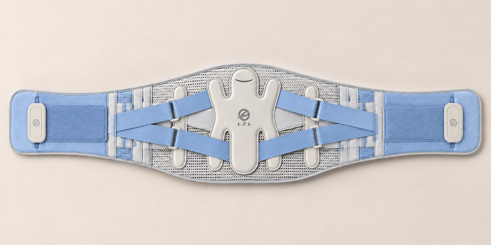
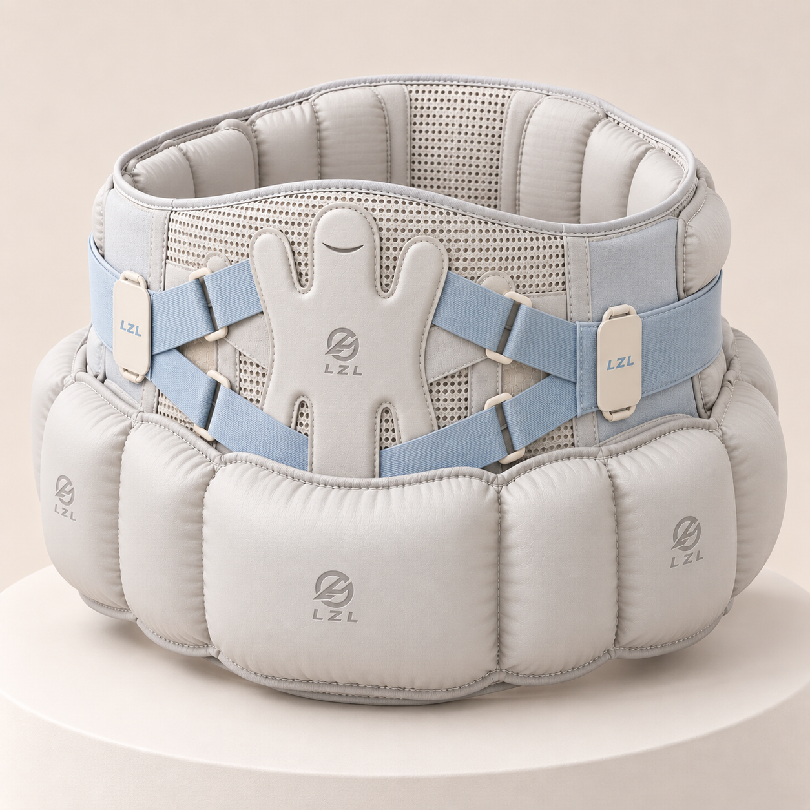

PRODUCT A / CORE DEVICE
安行护腰
一款集 TENG+IMU 多模态传感、AI 语音交互与主动气囊护髋于一体的智能护腰设备。
- 临跌风险识别TENG 柔性传感 + IMU 惯性测量，百毫秒级预判
- 主动气囊缓冲跌倒瞬间弹出，目标保护髋骨与大转子
- 事后救援GPS 与蓝牙通知家属，减少独居风险

轻薄柔性日用形态
ANXING TECH · SAFETY IN MOTION
安行护腰是一套面向老年跌倒防护的智能穿戴方案，把风险识别、瞬间护髋和事后救援连成一条安全闭环。

TENG + IMU我们随北京体育大学青年协会走进养老社区。一位爷爷告诉我们，老伴因为一次普通跌倒造成髋部骨折。那句话让团队开始思考：背靠体育工程、运动康复和运动人体科学的专业积累，我们能不能把防护前移到跌倒发生的瞬间？
安行护腰由此起点，逐步形成“医 × 体 × 工”的协同团队，把社区观察带回实验室，也把验证过的专业知识带回老人身边。
查看实践成果 →从一件日常护腰出发，建立事前识别、事发保护、事后救援与长期连接的完整安全闭环。
PRODUCT A / CORE DEVICE
一款集 TENG+IMU 多模态传感、AI 语音交互与主动气囊护髋于一体的智能护腰设备。

轻薄柔性PRODUCT B / CARE APP
让在外地的子女收到跌倒报警、GPS 位置推送和每周步态健康报告。
PRODUCT PLATFORM / 网页端
已完成的网页端运营系统：老人档案、防跌评估、设备台账、佩戴率看板、事件与响应记录、季度报告与改造建议。服务闭环的七个环节在这里运转。
项目材料记录了从传感精度、步态识别到气囊跌落测试的阶段性结果，也在养老社区持续收集反馈。
从老年跌倒的伤害结构出发，理解“报警”与“物理保护”的差别。
柔性传感、惯性测量与多模态融合算法的产品化路径。
243 份面对面问卷背后，老人真正关心的是轻便、舒适与保护。
团队将老年人的日常活动、跌倒经历、腰髋不适和智能穿戴接受度带回研发现场，让产品优先解决“能不能穿、愿不愿意穿、危险时能不能保护”这些问题。
讨论合作场景 ↗完成核心实验验证，推进产权授权与养老机构试点。
传感硬件与算法双向升级，沉淀子女端 App 数据闭环。
延伸保险协同与日韩市场，输出适老科技方案。
如果你代表养老机构、康复中心、社区服务站，或希望了解项目合作，欢迎留下信息。
安行护腰的 AI 推理在设备本地完成，步态数据默认不上传云端。只有在用户主动同步时，数据才会联网传输。我们仅在提供服务、改进产品和获得用户授权的范围内使用信息，不出售个人数据。
查看隐私政策摘要 →